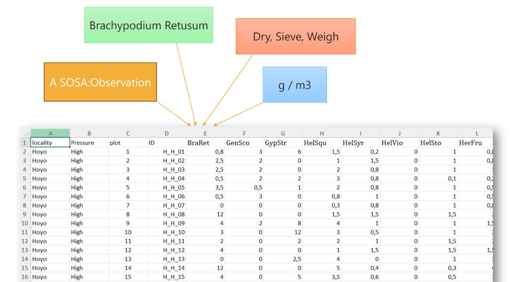

AUSO - Training on FAIR Soil Data
Paul van Genuchten
2026-05-16
A training on FAIR soil data
Organized in the scope of the African Union Soil Observatory (AUSO) project.
- Christian Thine Omuto (Fara)
- Chipo Cosford (Cabi)
- Paul van Genuchten (ISRIC)
Programme
10.00 Introductions Menti 11.30 Intro FAIR 12.00 Intro CABI FAIR Break 13.00 FAIR and Soil 14.00 Q&A
About
- The value of soil data is often limited by inconsistent documentation, poor accessibility, and lack of interoperability.
- The FAIR principles provide a framework to enhance the usability and impact of soil data.
The AUSO project
- Efforts to reverse soil degradation in Africa are held back by a lack of reliable, accessible soil data.
- The project (running from 2025 - 2030) aims to establish a African Union Soil Observatory, including a Soil Data Centre and Soil Health Dashboard to support the management of African soils.
- By consolidating data and helping 12 countries shape soil strategies, AUSO will equip decision-makers with the tools needed to promote sustainable land use.
Training objectives
- Recognize common challenges in soil data management
- Understand the FAIR principles and their relevance to soil data
- Identify suitable repositories for publishing soil data
- Understand the role of controlled vocabularies
Audience
- Researchers and students working with soil data
- Data stewards and support staff
- Environmental scientists and practitioners
- Anyone interested in open science and data management
Introduction via Menti
Join via menti.com 3720 5391
The FAIR principles
Conceived in 2014 at a Lorentz Center workshop, they address the need for better data sharing, with a focus on machine-actionability and “as open as possible, as closed as necessary”
- Findable
- Accessible
- Interoperable
- Reusable
Findable
- Data and metadata should be easy to find for both humans and computers.
- This includes assigning a unique and persistent identifier to the data.
- Providing rich metadata that describes the data and its context.
Accessible
- Data should be retrievable by their identifier using a standardized communications protocol.
- The protocol should be open, free, and universally implementable.
Interoperable
- Use a formal, accessible, shared, and broadly applicable language for knowledge representation.
- Use vocabularies that follow FAIR principles.
- Include qualified references to other data.
Reusable
- Richly described with a plurality of accurate and relevant attributes.
- Released with a clear and accessible data usage license.
- Associated with detailed provenance.
- Meet domain-relevant community standards.
CABI FAIR process framework
Use this framework to generate the necessary data management and access plan for a successful project
Data products in soil science
- Soil & land observation data
- Soil & land inventory at a given geolocation and time
- Data from controlled (field or lab experiments)
- Derived maps/products
- Aggregated harmonised datasets
- Predicted distribution of soil properties
- Optimization of soil health, erosion, yield, etc.
- Other data products (covariates)
- geology, sattelite data, land use, climate, etc.
Common challenges in data management.
- Unawareness if data on a certain topic, region or time is available
- Information loss at project/funding finalisation
- Vocabularies are not well organised for reuse
Common challenges in soil data management.
- Unexpected gaps for observed soil properties, due to different or unknown observation procedures
- Difficulties in applying a derived soil map due to unclarity on how it was produced
- Limited institutionalisation in producing derived soil data products
Repositories and aggregators
- Repositories are the primary place to publish data, they store the data under a unique identification with metadata
- Data can be publicly accessible or restricted (e.g. by request, or with an embargo period)
- Repositories are not always the first place to look for data.
- Aggregators (e.g. OpenAIRE, OpenAlex, Google Scholar, Web of Science) index data from multiple repositories and provide search interfaces to find data across repositories.
- Repositories that are indexed by aggregators are more likely to be found and cited.
Let’s give it a try!
- Use openalex.org to find soil data and maps for a given region, time period, or soil property.
- Use the metadata to understand the data and its context, and to find related data and publications
- Can you identify some existing data which is not findable in OpenAlex? Can you find it by searching in google or chatgpt? Can you consider why it is not indexed by OpenAlex or Google?
- Consider you would write a report using some data, how would you cite the data? Would your readers be able to find the data again in the future?
Identify suitable repositories
- Verify project/funder obligations
- Is the repository sustainable (institutionlisation)
- Does the repository provide persistent identifiers (DOI, handle)
- Is the repository connected to common aggregators (openaire, openalex, crossref, web of science, google scholar)
- Completeness of the metadata model, can the funder be indicated in the metadata?
List of commonly used repositories
Controlled vocabularies
- Improve findability
- Persistent identifiers for terms
- Hierarchical relationships between terms
- Clustering of records based on shared terms
- Interoperability
- Shared understanding of concepts (soil properties, observation procedures, units of measure)
Examples of controlled vocabularies or PID systems
Common datamodel for observation data
- The Observations, Measurements, Samples (OMS) working group of the Open Geospatial Consortium (OGC) has developed a common data model for representing observation data
- The OMS model is the basis of iso28258, INSPIRE Soil, FAO GLosis
- IN OMS each observation result is annotated with the observed property, the procedure, the feature of interest (e.g. soil sample), the time and location of the observation, and the unit of measure.
Annotate tabular data for interoperability
- Soil observation data is often stored in tabular format (e.g. CSV, Excel)
- The tabular format is combined with a readme or report to indicate the meaning of the columns
- This approach is not machine-actionable, and the documentation can easily get lost.
- The CSV on the Web (CSVW) standard provides a way to annotate tabular data with metadata,
- Use of controlled vocabularies while annotating the data can further enhance interoperability and findability.
Annotate a CSV

annotate a csv
Upload CSVW metadata with data

Upload CSVW metadata with data
Let’s try it out!
- Prepare a csv in raw2ready
- Annotate a csv with a CSVW metadata file, using the CSVW metadata editor
- Convert annotated csv to OMS using the Soil Data Streamer
Summary
- The FAIR principles provide a framework to enhance the usability and impact of soil data.
- Common challenges in soil data management include unawareness of available data, loss of information, and lack of institutionalization in producing derived soil data products.
- Repositories and aggregators play a crucial role in making data findable and accessible.
- Controlled vocabularies improve findability and interoperability of data.
- The Observations, Measurements, Samples (OMS) data model provides a common framework for representing observation data, and standards like CSVW can be used to annotate tabular data for machine-actionability.
Q&A

AU Soil Observatory 2026 - EU Horizon Grant 101218840